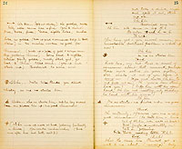

Music at rise of curtain. Ferguson, Boston, Masters, 8 others, miners discovered on side hill at work--Broderick discovered in foreground working on his claim. Animated picture--when music stops--Brod. throws down rock impatiently.
Broderick
(throwing down rock impatiently) Always the same! Red earth, pebbles and black sand but never a show of the yellow gold, I'm sick of breaking a half acre of stone, to get half a loaf of bread out of it; and like as not, I've prospected the whole hillside just to make way for some fool to strike his pick into the one lucky spot.
Ferguson
That's so! Blessed if I point another pick. (throws down his tool;--some of the others stop work)
Broderick
But I say lads--if there's a scarcity of gold, there are fools enough in camp, and here comes one--York! the Gentleman Capitalist, the dandy scientist!
Masters
Hang him!--
Broderick
His gentility is an insult to the camp. As to his science! Well, hold on, may be I might get something out of him there!
Enter York R.1.E. in hunting costume with gun and game bag--Broderick
crosses towards L.2.E. not noticing Broderick.
Hallo York!
York
(stopping angrily, aside) Confound his familiarity! (aloud, carelessly) Good morning! (going)
Broderick
(aside) Snob! (aloud--leaning on his pick) I suppose now you're ruffled at my hailing you that way?
York
(indolently) Oh no! Why should I be? It's vigorous and--chaste--
Broderick
(impatiently--aside) Hang his airs! (aloud) You're looking for game--So am I! Good! We'll swop information; now if I should tell you where you could flush a flock of quails in the chapparel yonder, perhaps you'd show me how to bag something out of this claim?
York
It is a fair offer, but you will excuse me if I plead press of time and decline it. Good morning. (exits L.2.E.)
Broderick
Humph! I'll get even with this gilt edged prig, one of these days. (takes up a handful of dirt) Confound it, this thing that's called a pocket claim is nothing but just a lottery with a thousand blanks in it and one big prize. I might as well give up the game.
Music--(crash R.H. as if carriage breaking down)
Boston
(coming down C.--dropping shovel) Hello! boys what the mischief was that?
Masters
(dropping picks and running down the rocks) Boys it's the stage coach broken down--There go the horses--Hi there, whoa! (all the miners drop tools and running down the rocks and off R.)
Broderick
(C.) The Stage Coach broken down, eh? I'm glad of that, it never brought me any good. Hello! (looks off R.1.E.)
Plunkett
(outside) This way, Miss, look out for the mud there, that's it--ah, here we are!
Enter Plunkett 1st and Miss Tempest 2d R.1.E.Plunkett
(L.) The stage will be repaired in a short time and you'll be on your road again same as if nothing had happened. Don't worry a bit, Miss.
Miss Tempest
(R.) Oh, I am so much obliged to you, for your kindness, so this is the gold region eh? Rather a desolate place to pass one's time I should imagine.
Plunkett
Oh, it's pleasant enough here Miss, we have any quantity of amusement. Hardly a night passes but we have a ball, oysters and champagne suppers and all that--
Broderick
Lie number one for the old fool! Oh--he'll sling his yarns now--as many as she wants. (exits)
Miss Tempest
Indeed? But let me ask the name of him who has so befriended me.
Plunkett
Certainly, Miss, with pleasure; indeed you honor me by asking the question--I
Miss Tempest
Ah, a rich one I hope?
Plunkett
You've hit it the first time, Miss--it's awful rich, Miss--ah Miss, I am afraid I have forgotten the name.
Miss Tempest
(laughing) It is so easy to forget what one does not know. I am Miss Tempest of San Francisco! (removing veil)
Plunkett
(amazedly) What! The rich Miss Tempest? The heiress of Judge Tempest, the famous belle?
Miss Tempest
(sighing) I am afraid you're right, I'm all that sort of thing.
Plunkett
But my dear young lady, this is no place for you--Not, you understand, that anybody in Deadwood would dare to--to--to--
Miss Tempest
Pardon me, my good friend, if I continue my explanation. You see when the stage coach broke down on the hill beside your camp, my maid was with me, and we were both on our way to the next settlement. I think they call it---- (X.L.)
Plunkett
Columbia?
Exactly, Columbia--to meet my father Judge Tempest. When you offered your help, I was glad of the opportunity of learning for myself something of the ways and manners of the miners and also glad considering my unprotected state--to find in the first one I met--a gentleman.
Plunkett
Oh dear, miss, you flatter me.--If any scoundrel--
Miss Tempest furtively examines photograph on log R.C. Exhibits surprise, delight and a purpose.Miss Tempest
A moment Mr. Plunkett, I think I can therefore trust to you keeping this episode a secret.
Plunkett
(with effusion) You do me honor, Miss, you do me great honor, and yet you only do me justice too. In the matter of keeping a secret you can rely on Abner Plunkett as you'd rely upon a corpse--an old corpse, Miss--a mummy!
Miss Tempest
I believe you. (aside) I wonder if I could trust the good natured extravagance of this man?
Plunkett
You have never been in this locality before?
Miss Tempest
(glances at photo again) Yes, once. (looking
Plunkett
You saw him?
Miss Tempest
(languidly) Only for a moment,-- (aside sighing) I wish I hadn't!
Plunkett
And he saw you?
Miss Tempest
No! That's the worst of it! It was dark in the carriage. He might at least have waited to know whether it was an old or a young woman he had saved. We advertised for the wretch but to no purpose.
Plunkett
A singular case, Miss, but not without a parallel. Why I remember once on the plains I stopped a vast herd of buffalo, 2,000 I should judge. They were dashing down on a carriage full of women and children--I up with a big buck--
Miss Tempest
(hurriedly) I know--the policeman told me all about it--But-- (picking up York's picture from log.) Who is this?
That--ahem! (aside) York's picture (aloud) That Miss Tempest is a--a--my son, my only boy--
Miss Tempest
Your son. (aside) I'm sure this is a likeness of the face I saw for an instant from the carriage window. (aloud) Where is he? Does he belong here?
Plunkett
(complacently) No. He was here a year ago, but he's gone, and confidentially, Miss he is engaged to one of the finest and richest heiresses in New York.
Miss Tempest
(aside) This man's son! In New York and (X.R.) engaged. Can it be the same? Yet (looking at photo) this is the face. (aloud) Mr. Plunkett, I've taken a great fancy to your son's picture. Let me tax your generosity as I have taxed upon your kindness further--give it to me--you have the substance let me have the shadow--But stop--let us make it a fair exchange. Here is my photograph. It flatters me no doubt.
Plunkett
(inspecting it) Jingo! The living image! I will wear it next my--
Miss Tempest
There is a condition attached to this gift, a fancy of mine--I want you to send this picture to your son the day he is united to--
Plunkett
Miss Grace Astor Livingstone of Madison
Miss Tempest
Miss Grace Astor Livingstone. I may not be able to recall to him the face of one to whom he once did a service, but you will assure him that gratitude for that heroic service and appreciation of his rare modesty, have prompted me to send it. (X. up R.)
(She goes down stage sadly)Plunkett
(aside--lays the picture down on board by his window L.H.) Oh, the mischief! What have I done? (inspecting her furtively--aside) I wonder if she sees through my--my bit of imagination and is chaffing me.
Miss Tempest
(aside and inspecting him furtively) I wonder if this son and this wildly promising mine aren't creations of the same prolific imagination? I must find out.
Enter Boston R.1.E.Boston
The stage coach is ready, Miss. (exits R.1.E.)
Plunkett
If you will allow me, miss, I will see you safe in. (crossing to R.1.E.)
Miss Tempest
Thanks with pleasure. (exeunt both R.1.E.)
Re-enter Broderick L.2.E.Broderick
I couldn't make out what that inspired liar was saying to the
Music.--Enter Ah Sin carrying carpet bag and umbrellaBroderick
(L.H.) Here you slant eyed son of the yellow jaunders, what you been up to?
Ah Sin
Walkee bottom side hillee--stage bloke down--Plenty smashee upee. Plunkee plenty helpee, plenty makee alee rightee--Plunkee very good man.
Broderick
Oh, very good man, when you see him tell him I drank his whiskey to keep you from stealing it, you sinful old sluice robber--shabbee that?
Ah Sin
Me no sabbee sluce lobber. Me washee-washee.
Broderick
(aside) If I leave that Chinaman here, he'll dip into Plunkett's cabin--it's just like that godless race, well it will serve Plunkett right and teach him that his trust in these pagans is misplaced. (going--Ah Sin following him)
Ah Sin
You wantee washee-washee? --1 dollar hap dozen--me plenty washee you.
Broderick
(going) Get out you jabbering idiot. (exits over rocks)
Ah Sin
Me no sabbee giblet-- (Ah Sin looks cautiously after Brod. and then returns to cabin

Ah Sin
(spits out whiskey) No gooddee, makee belly allee same like a fire (goes to claim) Onee, twoee, fivee, 'levene, eighte holee, muchee holee, no goldee (takes up pick and commences to dig in Brod's claim)--too muchee workee no good for Chinaman. (picks up a piece of gold and comes down stage jabbering Chinese) Come back to nightee, catchee plenty goldee, mally Ilish girl, go back to China. Allee same. (goes up and steals cup.) Broderick he come now. (Ah Sin sits down on log R.C.)
Re-enter Broderick L.4.E.Broderick
You here yet--you moral cancer, you unsolvable political problem--what's up now?
Ah Sin
Waitee tellee Plunkee you drink whiskey, so me no stealee him.
Broderick
Look here, my lad, there's a smell of sarcasm about that remark, perhaps there's more satire in your system, I'll shake it out of you before it sours--(seizes and shakes Ah Sin, the cup falls out, &c.) Oh you've been stealing have you? (cuffs him with his open hand, Ah Sin not resisting, only shielding his head with his arms.)
Ah Sin
Me no stealee him,--cup he lay around loose, me pickee him up--me good Chinaman.
Broderick
Oh certainly, of course you are a very good Chinaman! (he beats him--comic exit of Ah Sin over rocks at back. (Ah Sin runs up rocks at back, jabbering frantically in Chinese) You wantee washee-washee. (Broderick runs after him and both exit L.)
Enter York reading letter R.2.E.York
(L.1.E.) What the deuce has Plunkett got to write to me about? (reading) Only
Enter Plunkett, who sees this last kiss.Plunkett
(aside) Hello, but he's got it bad, got the picture too. Well, 'ats all right, it belongs to him. (York is still adoring the picture, and hasn't discovered Plunkett.) But if he asks questions what'll I--She told me to keep still about today's talk. (York discovers Plunkett and is confused.)
Oh is that you? Tell me, (feigning indifference) who's is this--is this yours?*
Plunkett
That? Oh yes--it's mine.
York
But I mean who does the original belong to--
Plunkett
(with simplicity) Belongs to me.
York
(astonished) To you?
Plunkett
(with unruffled calmness) Certainly. That is my daughter.
York
Your daughter?
Plunkett
Of course. You've heard me speak of my daughter often. This is the one.
York
(trapped into animation) Why she's divi--a--a-- (confused again) very good looking.
Music p.4 [illegible])*
Plunkett
Yes--Yes--she's well enough, though nothing to what her mother was at her age. Born rich, but didn't spoil her. She's as lowly and as simple as a cauliflower. Say, how's stocks to-day?
York
Stocks? What kind of stocks?
Plunkett
What kind? Why mining stocks of course--the Mary Ann for instance.
York
(absently) Yes--oh yes--certainly. (intent on picture--musingly) Oh, she's tip top--
Top of the heap, hey? By George I said it, a week ago, I did that very thing, now that's beautiful.
York
Oh most beautiful.
Plunkett
Now all she wants is the right sort of handling--but she's never had it.
York
What! It isn't possible.
Plunkett
It's just as I tell you. I ought to know. Oh, the leather headedest job't ever was.
York
And yet what a perfectly exquisite result.
Plunkett
Well, it does. But it's so. First they'd crowd her every way they could think of for a spell--
York
Oh, that was so unwise--and such a pity.
Plunkett
Yes, it was a pity--and there weren't any sense in it, and next they'd let up and just entirely neglect her for a spell.
York
Oh shameful, brutal. (aside) Poor child; poor child!
Plunkett
That's just what I said. Brutal--that was my word; why looky here, I'll tell you what they done once you see they'd sunk on her about a thousand feet--
York
An air shaft?
Plunkett
Yes--an air shaft
York
An air--
Plunkett
(interrupting in a loud, annoyed voice) Yes, an air shaft you ass! Are you deaf--Sunk an air shaft on her 'bout a thousand feet, then they drifted south 300 feet and couldn't find anything.
York
(idiotically) Couldn't find anything--
Plunkett
(loud) That's what I said, couldn't find anything--so they cut across from wall to wall--she was about 13 foot wide there--and timbered her up so she wouldn't cave in--just stoped her out you know till she was as empty as a jug--and then what did these everlasting fools do but put in a blast 'bout 2 ton of nitro-glycerine--and by George when that blast went off if it didn't lift her vitals!--Well sir of course her hysting works were out of order.
York
(interrupting) Who are you talking about?
Plunkett
Who? I ain't talking about any who. I'm talking about the Mary Ann.
York
The Mary Ann?
Yes, the Mary Ann. Who'd you suppose I was talking about?
York
I supposed you were talking about your daughter. (X.L.)
Plunkett
(stares at him about a minute) What have you been eating to-day?
York
I don't know. Why?
Plunkett
Well, it's--well, it settled on your mind, if it had settled on your stomach 'twould a' killed you. But say, never mind my chaff--I wouldn't hurt your feelings today. I've heard about your being busted and I'm mighty sorry. Of course, I wouldn't said a word about borrowing money if I--
York
(interrupting eagerly) Not a word of that, not a word! It's a pleasure to me to lend it, a pleasure. (forcing the $15 on the reluctant Plunk.) There, take it--Yes, I assure you I can spare it to you. (X.L.)
Plunkett
But--
York
But you must take it, for her--for my sake. Now not a word, not a word! (X. aside) He's got a noble face! I can just begin to notice the resemblance now, but at first-- (he is looking at the picture.)
(interrupting) Put that in your pocket, York, if you want it.
York
Oh, thank you; thank you. (seizing both his hands)
Plunkett
(with effusion) Don't mention it. Once more, York, you've done nobly by me. It's like you--it's like you York. Take the mine, it is yours. You've got the deed. Thank heaven it has fallen to one worthy of it. Come, come, take a drink on it and then we'll have a game of cards.
York
You'll have to excuse me, I hardly ever drink and I don't know how to play. But I see your friend Broderick coming. Look out old friend and take good care of yourself. Don't be too friendly with that man.
Plunkett
Too friendly? I ain't.
York
And don't quarrel with him either. He's got a bad eye, couple of 'em. Good night. (shake hands)
Enter Broderick L.U.E.
As York Xes stage he meets Brod. and the two look at each other, York sassily and whistling carelessly.
Exit York gazing on picture. Brod. proceeds to gather up moodily his pick, shovel, &c.
(aside--R.H.) (observes him as he gathers up his tools.) York's right it ain't wise and it ain't worthwhile to be quarreling with a body's next door neighbor; poor devil, he's out of luck; looks a good deal cut up about his ratty old mine. (aloud) Here, Broderick; what's the use of our splitting up this way, an unpleasantness between two men like us can't have but one end. (Brod. leans on his pick to listen) Bloodshed and death! (Brod. smiles amusedly) You know me--you know what I am when I get started, you know what I did in the Mexican War.
Broderick
(comes down L.H.) (sarcastically) Everybody knows it, Plunkett. We all know how you carved a regiment to pieces single handed.
Plunkett
(R. pleased.) No--but did you hear about that?
Broderick
(L.) Why, it's common talk in the camp, some of your other exploits too, like that one where you surrounded a battalion of the enemy all by yourself and took every man prisoner!
Plunkett
(still more pleased.) By George, I didn't think a little circumstance like that would be remembered. But I did it! By the great hocus-pocus I did that very thing.
Broderick
You are a dangerous man, Plunkett, this camp knows it. It is notorious that when you shouldered your gun in the War of 1812 England gave in and hung out a white flag.
Plunkett
Well, upon my sacred heart I supposed that these things were doubted--
Broderick
Doubted--why my dear friend, nobody ever doubts your word. The rivers of blood which you shed in the American Revolution.
Plunkett
(with effusion) Confound it, Broderick, I've always misunderstood you and I'm sorry for it. (rises up and approaches Brod.) Any amends I can make--here--we've both been in starvation luck lately and have about forgotten what a square meal is. But I've made a raise. (showing money) And if it's be any favor to you to divide, why divide it is.
Broderick
(aside) Oho, this is luck! Divide? Yes--I'll borrow half and win the rest. (aloud) Plunkett, there's mighty good stuff in you, I've always said that, and if you don't mind lending me--
Plunkett
Here--help yourself and welcome--
Broderick
Oh come!
Plunkett
Well, never mind about that. It wasn't a matter of any consequence anyhow. Columbus said if I had such a thing as a deck of cards about me--
Broderick
And had you?
Plunkett
My friend, would I start on a voyage to a degraded and savage land without the appliances of Christian civilization! No sir. I had them.
Broderick
Got them yet?
Plunkett
Would I lightly throw away such a memento? (produces a greasy old deck.)
Broderick
(R.) Yes--I see, it's the same old pack. Would you like a little game of draw?
Plunkett
Man, I'm fairly suffering for it.
They seat themselves.Broderick
Ah Sin comes on about now.
Here--cut for the deal. (they cut) My deal. (he deals) Ante and pass the buck. (they ante--the buck is passed to Plunkett.)
(examines hand.) Give me 3 cards. (discards and takes them)
Broderick
My hand's no account. I'll take a book. (discards his hand and deals himself a new one, slips it under his thigh and fetches up another hand.)
Ah Sin
Broderick hab got cold deck--Plunkee goodee me--no likee see Broderick swindly him.
Broderick
What do you do?
Plunkett
I bet 10 cents. (shoving up a dime.)
Broderick
I see your 10 and go you 10 better. (shoving up a couple of dimes)
Plunkett
I raise you 25--
Broderick
I call you--what you got?
Ah Sin
Bimeby Plunkee pilee all gonee-- Plunkee he no got a cent.
Plunkett
Two pair and a jack--what you got?
Broderick
Oh, nothing much--only a trifling little diamond flush. (rakes in the money) Ante and pass the buck.
They ante--Plunkett begins an elaborate shuffle of the cards; Ah Sin betrays an intelligent purpose, shows revolver, slips out--just as Plunkett has got the hands dealt out Ah Sin fires a shot outside--both jump
Broderick
What's that?
Plunkett
There's a man for breakfast! (exeunt both R.3.E.)
Music. Enter Ah Sin.--goes to table and looks at cards--looks at Broderick's hand Two littee tenee--two litlee twoee--velly good hand-- (looks at Plunkett's hand) Two litlee fivee-- (disgusted) Some Mellican man no can deal--don't know how. (goes up stage and shuffles cards--watching off R occasionally--picks out 4 kings and gives them to Broderick and then gives 4 aces to Plunkett.) Him all littee now. (looks about jabbering in Chinese--tries to put pistol in his waist--but not having time puts it in the barrel and conceals himself*--Re-enter Plunkett and Brod.)
Broderick
(resuming former position) Didn't you think you heard a shot! (looks at hand and shows furtive signs of delight which he instantly suppresses.)
Plunkett
I know I heard it, and it wasn't 20 steps from where we're-- (aside) My soul, what a hand! (looks at his hand and shows signs of delight which he tries to suppress.)
Broderick
(aside) Oh, but I'll sweat him this time, if I can only draw him on to bet.
Ah Sin
Broderick he likee hand, velly good hand--Chinaman deal alle same like poker sharp.
Broderick
(dissimulating) Consarn it, I don't seem to have any luck. Give me 4 cards. (discarding) Never mind, no use to try to improve such a hand as this. (aside exultingly) There ain't much lie about that. (takes back his discard)
Ah Sin
Him old smarty from Mud Springs.
Plunkett
(pretending disgust)
Ah Sin
Allee same Plunkee--he allee time plenty lyee.
Plunkett
I guess I'll take 3 cards--I'll take 4. (hesitating with discard in his hand) No, bother it all, I might draw all night and couldn't better such a confounded hand as this. (aside) Oh, no, I reckon not.
Broderick
(aside) Now, old man, if you'll just stand up to the rack I'll skin you of everything you've got in the world. (aloud reluctantly) Well, I guess I'll go 10 cents. (puts it up)
Plunkett
(reluctantly) Well, I don't know--yes--I'll do it. I see that and raise you 25.
Broderick
Oh, you're there are you! All right! I come in and more, I go a dollar better.
Plunkett
Oho, bluff's your little game, is it! You can't scare me with your little old deuces and. I see your dollar and go you five better.
Broderick
I bet I will scare you, come! I see your 5 and go my pile better! Come in if you dare.
Plunkett
(getting excited) I see your pile and go you-- (looking around feverishly) go you my clothes
Ah Sin
Plunkee he no gotee clothes, he no can take a walkee.
Broderick
Good, I see your rags and go you my pick, shovel, fuse, powder, cabin better.
Plunkett
(rising) I see it all, pick, shovel, fuse, powder, cabin, and go you my--my wife better.
Ah Sin
He got him now.
Broderick
I see your wife with my grandmother.
Ah Sin
Stand off!
Broderick
And go you my scurvy old Branch Bank of England mine, better.
Ah Sin
De debbil! Dere go my rich mine.
Plunkett
(aside) I've sold my mine to York, but no matter. (aloud) I see your American Branch of the Bank of England and slap up my old Goddess of Liberty mine against it. I call you! What have you got?
Broderick
(throwing down hand) Ha! ha! ha! Four kings, beggar! What you got? (about to rake in pile.)
Plunkett
Four aces, my child.
Tableau: The men stand and lean over staring into each others' faces. Plunkett's fingers slowly closing upon the pile and Brod's fingers retiring from it. Ah Sin doing dumb show of enjoyment of it, and exits.
(sarcastically) I wish you joy of your winning. Take your new claim, and take with it all the heart break and trouble it has given me. If you get anything out of it but disappointment and despair, why you've found another lead than I have.
Plunkett
Aye, old man, but the case has changed. That mine belongs to a lucky man now. (puts barrel and stools L.C.) You understand? A lucky man and before that luck gets cold I mean to try it once more--The moon is up and there's light enough to put in a pick, so I'll do it, if only to take formal possession. (goes to cabin and takes up pickaxe)
Broderick
(aside) The besotted old fool is really going. (aloud) All right, old man, go on, there are whole bonanzas of poverty and beggary down in that hole somewhere. Don't get disheartened, you won't have to dig deep to find them. (sarcastically) Why, a man of your luck ought to strike them in 48 hours. (aside) And with all my heart I hope he will. (exit R.1.E.)
Plunkett
(at mine) They say hereabouts that when a miner is at the point of making a strike, the blood leaves his cheeks, his heart stops beating, his hands are cold and his limbs grow weak. Pshaw, a few good blows will bring back warmth and strength. Eh! What's that! I thought I saw something moving by the tree.
Broderick
(Xing rapidly to C.) Hold on there!
Plunkett
Hold?
Broderick
Strike another blow in that claim and you shall suffer for it.
Plunkett
You would not dare to--
Broderick
Dare! Do you think me so blind as not to see through this poor juggle? You stacked the cards there to win this from me.
Plunkett
(L.) It's a lie--and you know it's a lie!
Broderick
(R. starting) A lie--You are an old man, don't tempt me!
Plunkett
Yes--a lie!--The whole camp shall know it.
Broderick
And if they did who will believe the champion liar of Calaveras (pronounced
Plunkett
I am an old man, Silas Broderick--But since I am--I can more readily put the few years left me at stake to-night for my rights. Ho! York! Masters!
Broderick
Be still--or I'll strangle you.
Struggle continues--down stage to table, in struggling Plunkett falls, overturning barrel and pistol rolls out on floor--Plunkett seizes pistol and fires a single shot missing Brod.--who wrests pistol from his hand.)Broderick
Another shot may alarm the camp! (aloud to Plunkett who is rushing at him with stool upraised) Ah, will you, take that. (striking Plunkett with butt of pistol. Plunkett breaks from him and runs up C. to rocks--calling "Help"--"Help"--Brod. following overtakes him--and throws him over cliff C.) What have I done! Plunkett! Plunkett! (looking down) No answer! Great heaven, I have killed him. That shot will bring the whole camp here in 5 minutes. How to get away without suspicion. Eh, what's this? (looks down upon his jacket and looks around) Blood stains--his blood! (strips off jacket) I mustn't be seen here with this--I have it. (hides jacket in chaparral R.3.E.) I'll return for it tomorrow. Ah, footsteps, a figure coming
Enter Ah Sin slowly--goes to bush and gets jacket. Re-enter BroderickBroderick
That infernal Chinaman--curse him, I must have that jacket or I am lost. If I could frighten him into silence or better still fasten the crime on him. Hello! John.
Ah Sin
Good day John. You want washee washee.
Broderick
Yes, I want some washing done, but look here--
Ah Sin
One dollar hap dozen.
Broderick
Yes, but you washee, washee, what?
Ah Sin
Me washee-washee him! (shows jacket)
Brod. retreats down stage, until he reaches the stump of tree R.H. and secures in his hand a pick which he holds behind him as he cautiously approaches Ah Sin--Ah Sin watchful of him, yet seemingly preoccupied, continues to draw articles from carpet bag, a few silver spoons, a chicken, a pair of stockings, a tablecloth and finally as Brod. approaches him closely and raises pick, a revolver which he cocks and accidently as it were (chord) covers Brod. with it--Brod. halts and drops his pick noisily.Broderick
(C.) Look here, Ah Sin, you're a smart fellow.
Ah Sin
Me sabbee smart.
Broderick
A
Ah Sin
(L.) No like selee--How much you give?
Ah Sin is still taking rubbish from the inexhaustible carpet bag all through this.)Broderick
Well, perhaps 300 dollars might satisfy the owner.
Ah Sin
Me talkee with man jackee belongee.
Broderick
No--you answer now.
Ah Sin
Me takee 500.
Broderick
Enough! I haven't got 500 dollars--but my share in the "Hearts Delight" mine is worth more than that--will that do? (Ah Sin hands jacket to Brod.) It's mine. The river's the place for this. John got any paper in that store house of yours? (indicating bag.)
Ah Sin
Yesee, me gottee everything.
Broderick
Here, tie this up for me. That's the proper thing to do when a man buys anything from you, eh? Ha! Ha! (as Ah Sin ties up package--Brod. goes up stage and picks up stone.) Here, put this stone in to make it seem as if it was something valuable! Put a string around it.
Ah Sin
Stlingee costee too much money. Ten cent for stlingee.
Broderick
I won't pay for the string.
Ah Sin
No hab got ten cent for stling? Then me lend um stling. (ties up bundle
Ah Sin
Goodbye, John. You satisfly?
Broderick
Yes, perfectly satisfied!
Ah Sin
No go back on Chinaman?
Broderick
Not likely to! (Exit)
Ah Sin
Me satisfly too! (Comes down stage, fumbles at sleeve, drops cards, which he puts his foot on, fumbles at his sleeve and finally produces bloody jacket, and furtively looking around.) He forgottee jackee!! (ring quick on word)